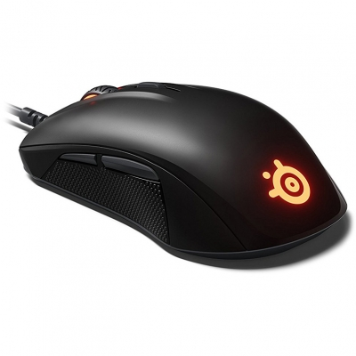

SteelSeries Rival 110
Описание товара
Мышка Rival 110 оснащена только самым нужным для гейминга: оптическим сенсором TrueMove1 с честным разрешением 1 к 1 и механическими переключателями с гарантированным ресурсом нажатий 30 миллионов кликов.
Фирменное ПО
ПО SteelSeries Engine открывает невероятный арсенал возможностей и доступ к приложениям для изменения режимов RGB-подсветки. Специальное приложение для Discord и GameSense позволяет выводить уведомления чата на любые устройства SteelSeries.

Характеристики товара
| Модель сенсора | Оптика SteelSeries TrueMove1 |
| Разрешение | 7 200 CPI и 240 IPS |
| Ускорение | 30 г |
| Частота опроса | 1 мс |
| Ресурс нажатий | 30 млн |
Подробное описание товара
SteelSeries Rival 110 это симметричный манипулятор классической полукруглой формы. В Rival 110 верхняя панель сделана из шероховатого и достаточно устойчивого к загрязнению пластика черного цвета с небольшим отливом. Клавиша переключения разрешения и колесо прокрутки серого цвета и визуально выделяются на фоне корпуса. Две основные кнопки срабатывают с одинаковым усилием чуть выше среднего и четко различимым щелчком. Переключатель уровня разрешения тоже средний по усилию и более звонкий.
На левом боку корпуса есть две боковые кнопки, серого цвета, со средним усилием нажатия и громким щелчком. Они имеют треугольную форму в профиль и их удобно нажимать как прямо, так и сдвиганием пальца снизу вверх. Глянцевая пластиковая вставка под кнопками покрыта текстурой в виде мелких и плоских пупырышек. Она далеко не такая приятная на ощупь как резина или силикон, но зато крепко сидит в пальцах, независимо от того, влажная рука или сухая.
Кабель серого цвета, мягкий и гибкий, без оплетки. Общая длина составляет 1,85 метра. Ферритового кольца нет, USB разъем маленького размера.
Поставка и комплектация
Упаковка Rival 110 предельно простая и маленькая. На внешней красивой обложке есть несколько фотографий продукта анфас, и в профиль, и перечислены коротко его основные достоинства на восьми языках. Внутри же от повреждений мышь защищает вставка из неокрашенного толстого картона.
В комплекте кроме мыши есть только инструкция.